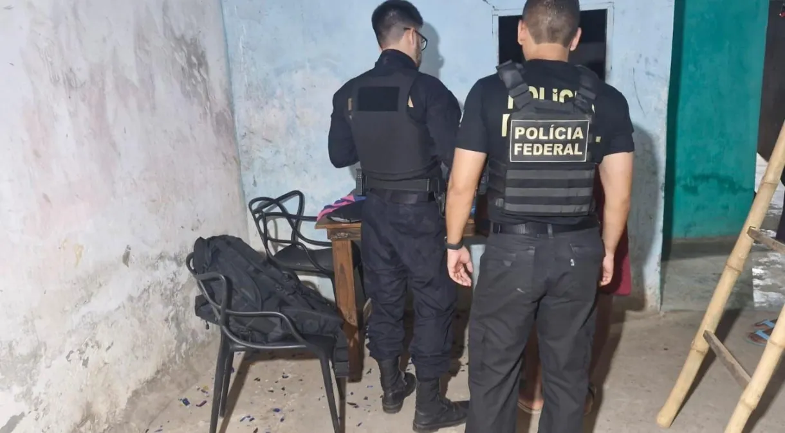
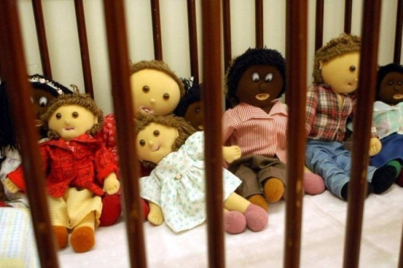
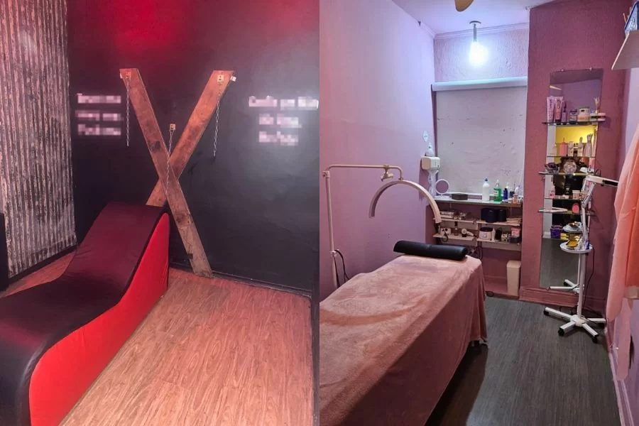
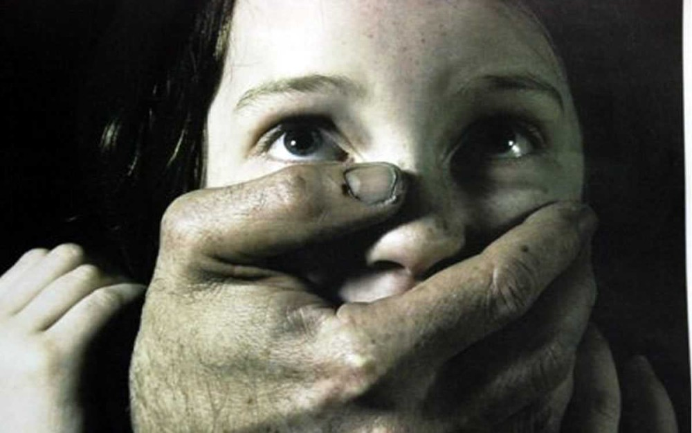

Abuso e Exploração sexual
contra crianças e
adolescentes

PF mira suspeita de compartilhar imagens de abuso sexual contra crianças online

Pedófilos terão nome e CPF públicos para consulta

Polícia desmantela casa de exploração sexual disfarçada de clínica de estética em Santos

Integrantes de facção são presos por suspeita de exploração sexual de menores e outros crimes em
RO